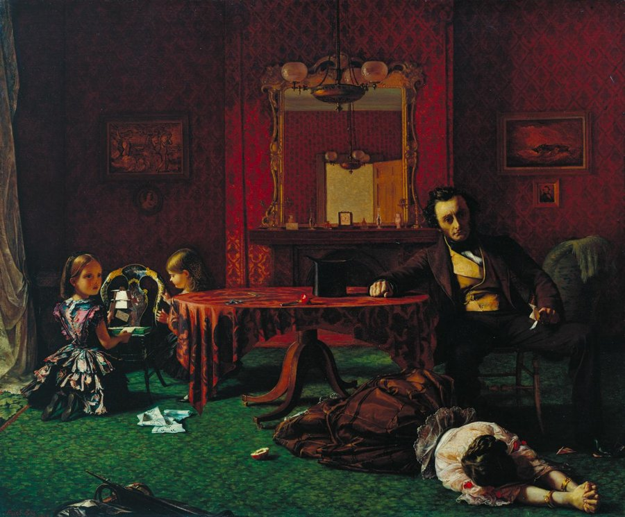
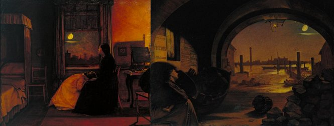
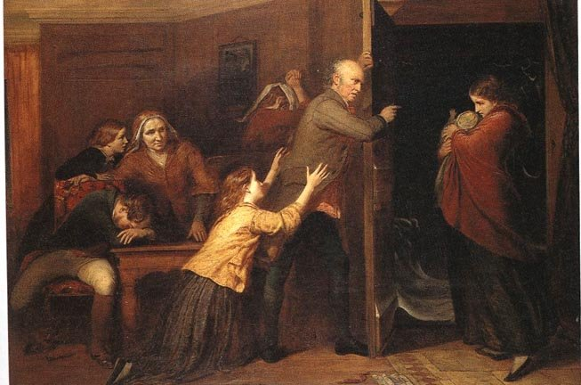

Abstract
The tales of the fallen woman became an obsession in the Victorian era, reinforcing fears of women’s uncontrolled sexuality. Through case studies spanning literature and painting - from Coventry Patmore’s “angel in the house” to Augustus Leopold Egg’s Past and Present - this paper traces how the figure of the fallen woman was constructed, feared and represented in Victorian culture.
The tales of the fallen woman became an obsession in the Victorian era and it reinforced the fears of women’s uncontrolled sexuality. During this period, sexuality suffered from religious repression. The acceptance of the Christian monogamy made all Western societies respect the sexual code of behaviour, which labelled sexuality as a taboo and the discourse on sexuality was controlled by marriage. The prudery of the Victorians’ was highly criticised by Michel Foucault (1978) as the ‘repressive hypothesis’.
Women, in particular, suffered from this oppression when society adopted Coventry Patmore’s poem (1847) The angel in the house. The poem presents the good, pure, innocent, submissive, gentle, self-sacrificing, childlike, and asexual woman. These qualities illustrate that the woman needs to be taken care of. The mainstream literature and lectures were there to reinforce the existing views of marriage by laying out clear roles on how men and women should behave. For instance, Sesame and Lilies were two lectures delivered by John Ruskin in Manchester between 1864 -1865, of which 44,000 copies were sold by the end of the nineteenth- century. The rhetorical delivery of these caused society to live by these rules religiously and degrade anyone that did not. The lectures describe life in the public and private spheres: The man, who is meant to work and take care of his family and the woman, who takes care of the house and the children. John Ruskin romanticises the man and compares him to a knight/hero who provides for his family through rough work and saves his wife from temptation, danger and evil. The woman rules the house, and can only use her intellect in seeing the quality of “things” (Ruskin 136). The only “cleverness” women could have, was to admire the cleverness of men. The woman is not allowed to use her intellect for invention nor creation, her function is to “Praise” her husband (Ruskin 136). Although Ruskin does not state it explicitly, the fact that the word praise is capitalised shows a connection to God. The allusion creates an unconscious link to God, making the man feel in control, empowered and God-like. For the woman, it meant worshipping her husband and not questioning his ways. This enforced the double standard between genders: the man was unquestioned and free to do whatever he desired, because he had earned that title by taking care of his family; the woman had to be vigilant to maintain her purity in order to remain a respectable woman and these rules made it very easy for women to fall from grace. “The faults of women are visited as sins; the sins of men are not even visited as faults.”
Michel Foucault (1978) argues that sex was everywhere in the nineteenth-century (e.g. law, medicine, religion, and education), and the attempt to control sex intensified the discourse in literature. This led to increased sexual liberation where sex dominated the literature and created new vocabulary to describe sexuality.
If a woman gave in to her sexuality she would become a fallen woman. This unforgiving act created by society did not solely come from the moral attitudes towards sexuality. Its origin has a connotation from strict religious analogy. The term ‘fallen woman’ comes from the first fallen woman: Eve, who was seduced by the devil to eat from the tree of life. Her actions caused Adam and Eve to be banished from the Garden of Eden (Griffin 2017). This elaborates the mindset of the people, that someone could be solely good or evil, there was no middle ground. The term ‘fallen’ became applicable to prostitutes, adulteresses, unmarried women that were victims of seduction, and in most cases the criminal lower-class women. These women were often banished by society that stigmatised them and the only way to be “purified” was to drown themselves, because forgiveness or redemption was unheard of.
The double-standard between gender was legitimised in the legislation of 1857: The Matrimonial Causes Act. This act gave men the right to divorce their wives on grounds of adultery alone, whereas the woman had no such rights. John Stuart Mill reviewed the justice system of monogamy in The Subjection of Women (1869) and concluded that the wife is the bond-servant of her husband. The Matrimonial Causes Act allowed for both men and women to divorce on grounds of adultery, cruelty, desertion or incest. However, the man could appeal for divorce solely on grounds of adultery, whereas the woman had to prove a combination of adultery with one of the other wrongdoings.
Upon any of such petition presented by a husband … alleged to have committed adultery be made a respondent. (Horace 114)
The quote demonstrates that when the husband accuses the wife of infidelity, he does not need to find the "other man" – the wife is the defendant. When the wife accuses her husband, she needs to find the "the other woman" and have other proof of cruelty to divorce the husband. It is much harder to find the "the other woman" and if/when she does, it will be much harder for the wife to convince the “other woman” to admit the crime. In this case, the other woman would be labelled as a fallen woman herself and is unlikely to want to appear in court. The law creates a clear double standard which makes the burden of proof much more difficult for the woman to obtain than the man.
In 1852, Gustave Flaubert wrote a fictional novel called “Madame Bovary”. This novel illustrates the practical problems associated with the Matrimonial Causes Act. It demonstrates the unfulfilled desires of a woman trapped in a marriage. Emma (Madame Bovary), the main character, is raised without a mother on a farm with her father, who sends her to a convent to get educated. She marries Charles, a town doctor, but soon regrets her choice. Emma has no solid grounds to end the marriage, because her husband treats her well. Gustave Flaubert (p.30) demonstrates that Emma has a preconception of fictional accounts of love which is not matched in reality. During the novel, Emma has two affairs. After the first encounter of her first affair, ‘Emma says, “I have a lover! ...passion, ecstacy and delirium”’ (Flaubert 130). In the affair, she has found a reality which matches her preconception. To Victorian audiences, this suggested that knowledge from books and overeducating women would lead them to sin. The book outraged the people as it violated the sexual codes of Victorian morality because only faithfulness between the married partners determine the nature of the domestic ideal towards which a novel’s plotline should be oriented in English novels.
The publishers and writer were taken to trial because the book would corrupt young female readers. The specific element of the book that motivated people to put the author on trial was not due to descriptions of sex, but the acknowledged sinful behaviour which Emma had gained from reading her books that lured her on a path of adultery, seeking for more in life. Another reason was the fact that there were no characters in the book warning that adultery was wrong. ‘As the lawyer in the trial objects, “She glorifies adultery…far more immoral than the fall itself!”’ (Flaubert 323). In terms of narrative, adultery is not just an event, it is the dynamic that drives the plot. Emma’s adultery is a metaphor for a political feminist voice, she wanted to be someone she chose to be, rather than what society expected of her. This becomes clear when she is giving birth and wishes a son and not a daughter, ‘while she says, “A man, at least, is free …restrained by some rule of conduct.”’ (Flaubert 74) which demonstrates the powerlessness of women in society and men’s ability to do anything they desire.
The children of fallen women were similarly stigmatised by society as they had no family to take care of them and teach them the moral codes. The paintings of Augustus Leopold Egg, Past and Present, reflects the fear of the public’s morality and family life. John Ruskin was also an art critic and he used the paintings in his lectures and academic notes (Fowle, 2017). The paintings are a set of three that demonstrate the encounter of infidelity by the wife and the consequences that will follow her. The paintings entitled: Misfortune, Prayer and Despair.

The first painting illustrates the exposure of the fallen women. The wife lies on the floor at her husband's feet full of shame, while the husband sits grimly at the table holding a letter of his wife’s lover in his hand. The room is full of symbols: the children that are building a house of cards which is collapsing, signifying the breakdown of the couple's marriage; the cards are supported by a novel by Balzac - a specialist in the theme of adultery; the apple is a symbol of Eve’s fall; the two pictures on the wall portray the dismissal of Adam and Eve from the Garden of Eden, which symbolises the fall of the woman; and a shipwreck by Clarkson Stanfield named Abandoned of which the couple's portrait hangs right underneath. The wife’s position on the floor and of the bracelets around her wrists, in form of snakes, demonstrates that she is shackled by her deviant crime. In Victorian times a man could safely take a mistress without fear of blame, but for the woman, it was an unforgivable crime.

The two paintings represent the present, which is 5 years after the fall of the mother that was driven out her home. The girls have become orphans because the father has recently died. The sisters stare at the moon while praying to their mother. Without the presence of a male figure in their lives implies they will give in to their female weakness that comes from Eve (Fowle, 2017), and probably end up in prostitution. People believed that daughters of a fallen woman would inherit the sins of their mothers. The mother is also staring at the same moon which indicates both paintings are taking place at the same time. The mother is homeless and uses one of the Adelphi arches for shelter which was seen as the lowest and darkest form of human abandonment. In her arms, she is holding a young child which is the result of her adulterous affair that no longer exists because no honourable man could be with a fallen woman. Behind her are flyers advertising plays that represent sexuality and giving into lust, which are the actions that put her in the situation she is in. She destroyed her middle-class home, the Eden-like heaven, and made her family suffer (Fowle 2017).
In 1851 Richard Redgrave painted The Outcast, displaying the insensitive and strict actions of the moral attitude towards sexuality.

The painting portraits the shame that the daughter has brought with her illegitimate child to the respectable house of her family. The father stands by the door and casts his daughter out of the house, while the mother is comforting her son. The son could have prevented the shame his sister brought to the house if he had been a better escort to her and protected her from seduction. One daughter is on the floor begging her father to show mercy. This painting spreads fear and is seen as a warning to young girls of what would happen if they let themselves be seduced by their sexuality (Landow 2017). At the same time, the painting evokes empathy and compassion for the young girl and her infant being forsaken by her family (Landow 2017). The Foundling hospital in London, raised the babies of unmarried women that had to give up their children to attempt a second chance as servants or commit suicide. These paintings are an example of the lack of empathy towards fallen women and their infants.
Victorian newspapers created two versions of England: the ideal Victorian society and the sensational Victorian society full of poverty and criminality. The readers were more interested in sensational version, especially women that were accused of wrongdoings. Being a fallen woman was not only morally wrong but also legally, therefore were criminals. As a punishment for their crimes, they would go to prison or be shipped away to Australia with male convicts.
The writer Elisabeth Gaskell was against the deportation of young innocent girls and thought they should be redeemed in the domestic sphere. She volunteers in prison where she meets a female inmate called Parsley. Parsley’s personality forms the basis for the main character of Gaskell’s novel Ruth. In the novel, Gaskell emphasises the innocent, naive, and childlike character of Ruth (Gaskell 199) which resembles the symbolic angel in the house. To show Ruth’s innocence, Gaskell portrays her as a victim of male domination. She avoids writing about the sexual desires of Ruth to keep her pure. Thinking of sex was seen as falling mentally and the act of sex was seen as physically falling (Auerbach 40).
Ruth is an innocent girl working thirteen hours a day as a seamstress. Her innocence and vulnerability come from her not having parents who could teach her the dangers of the world. Ruth meets the aristocrat Henry Bellingham who has an interest in Ruth. She ends up losing her job and he seduces her to London. When Henry’s mother finds out about her son living unmarried in an Inn, Henry leaves Ruth. As a fallen woman and being pregnant she feels she has no other choice but to end her life. However, Mr. Benson, a minister, finds out about her past and takes her to Ecclestone where he introduces Ruth as a widow because widows are not seen as fallen women. After Ruth gives birth, she starts working as a tutor for Mr Bradshaw’s children. With this, Gaskell shows that, given a second chance, there is another path for fallen women. When Mr. Bradshaw hires a new doctor, Ruth discovers it is Henry. When Henry offers to marry her, Ruth rejects him. Gaskell empowers women at this point by giving Ruth the ability to say no, being able to not repeat mistakes.
Mr Bradshaw’s daughter Jemima, discovers Ruth’s past and decides to remain quiet about the situation. Jemima realises that she is from a loving family and privileged background, the opposite of Ruth. Gaskell is underlining the fact that Ruth does deserve another chance. Unfortunately, Mr Bradshaw discovers Ruth’s past and throws her out of the house. It seems the revelation of Ruth’s past makes her fall again, but Ruth does not give up. Even though Ruth and her son are banned from society, she works as a nurse for the poor where she redeems herself again. When a fever strikes the town, she discovers that Henry is ill. Even though Ruth knows he is “a bad man” (Gaskell 222), she still loves him. Henry does not recognise Ruth, but she nurses him back to health. Ruth contracts the fever and she dies from the illness of the man that ruined her life in the first place.
Gaskell shaped the narrative such that Ruth did not represent the stereotypical fallen women but was closer to a heroine-type figure. No matter how much Ruth suffered, she remained good and pure. Gaskell redeemed Ruth twice throughout the novel, yet the heroine dies at the end, ultimately due to a man. It’s possible that, to get published, Gaskell had to please both sides of Victorian England by killing Ruth, or by using the modes of persuasion (ethos, logos and pathos) strategically, she was trying to make a subtle feminist statement: that Ruth should not have died and deserved the same chance men have in life. Regardless of how hard a woman tries, a man has the ultimate power to destroy her reputation and make her fall. Gaskell shows that fallen women can succeed if given a second chance and therefore criminalising women is not the solution.
The Victorians saw fallen women as a moral threat, a disease, and while society portraits these women as weak, with lack of shame and modesty, in fact, these women were victims of male domination by a social system that stigmatised them for their fall. It did not matter how the woman had ‘fallen’, she was branded as the bad, diseased, criminal and sexual woman (Auerbach 161). These women usually ended up in prostitution because there was no other occupation left for them. There were also women that chose to become prostitutes because jobs that were eligible for women as seamstresses, shop girls, domestic servants were long hours and little pay. In fact, prostitutes could earn in half an hour what a respectable woman could earn in a week.
The Industrial Revolution caused people to earn more money, social classes started to change and cities to grow. In Victorian England, prostitution was high and booming, and so were venereal diseases, this is why prostitution became labelled as "The Great Social Evil". William Acton (1870:38) claims that prostitutes could have 15-23 clients a day. If the woman was already infected and had an average of 20 clients a day, it would suggest her to infect 7,300 men in 365 days. This caused society to blame prostitutes for draining the health of the male population.
The Contagious Disease Act (CDA) was the first attempt by the British Government to personify the problems caused by prostitution and protect the military from venereal infections. In the early years, the CDA was seen as a reasonable tool control public health. The CDA made prostitution legal and possible for police officers to arrest and examine women. However, when the soldiers returned from the Crimean War, one out of three soldiers died from venereal diseases than implications from the battlefield. This caused police to detain prostitutes/women suspected of being diseased prostitutes in a violent manner for treatment and put them in lock hospitals for three months. The CDA originally applied to a few port towns but by 1869 had been extended to 18 districts, and the duration of time spent in the lock hospital was up to a year. Once a woman was put on the list as a prostitute, only a magistrate’s order could remove the name, which was unlikely to happen, thus caused innocent women to be labelled as prostitutes (Berkowitz 373).
The CDA created a double standard because clients of prostitutes were not examined for venereal diseases. In response to the double standard created by the CDA, the National Association (NA) for the Repeal of the CDA was established to have the male clients equally examined. However, the irony of this association was that it solely existed out of men and did not allow any women in the meetings. Due to this, and how poorly women were treated during examinations, the Ladies National Association (LNA) for the Repeal of the CDA was established in 1869 by Josephine Butler. Butler was not a feminist but a deeply religious woman that formally asked her husband’s permission before taking up any anti-CDA case (Berkowitz 374). For Butler, the immorality of prostitution was nothing next to the indecencies caused by men. In their journals were thousands of stories by girls/women tormented by the police. Some of them even died during examinations, but to the police, and pro CDA Victorians, it was a case of another dead whore. At public meetings, the LNA would demonstrate the objects used by the police to examine women, the visualisation of what women went through horrified both virtuous and fallen women (Berkowitz 376).
The NA and LNA had separate meetings but were fighting for the same cause, and were supported by the Royal Commission. Finally, in 1883 they convinced Parliament to suspend the CDA and repealed it in 1886. The LNA was entirely led by women that stood up for the rights of women that later on started a campaign for the women’s right to vote. This movement was the beginning of the end for double standards.
Anderson, Amanda. Tainted Souls and Painted Faces: The Rhetoric of Fallenness in Victorian Culture. London, Cornell University Press, 1993.
Auerbach, Nina. Woman and the Demon: The Life of a Victorian Myth. London, Harvard University Press, 1982.
Barnhill, Gretchen. "Fallen Angels: Female Wrongdoings in Victorian Novels". Uleth.Ca, 2003, https://www.uleth.ca/dspace/bitstream/handle/10133/241/MR17382.pdf?sequence=3. [Accessed 13 May 2017].
Bass, Randall. "‘A Free and Easy Life?’ Transportation of British Convicts To Australia During The Eighteenth And Nineteenth Century.". New Histories, 2017, http://newhistories.group.shef.ac.uk/wordpress/a-free-and-easy-life-transportation-of-british-convicts-to-australia-during-the-eighteenth-and-nineteenth-century. [Accessed 13 May 2017].
Boyle, Thomas. Black Swine in the Sewers of Hampstead: Beneath the Surface of Victorian Sensationalism. New York: Viking Press. 1989.
Burnette, Joyce. "Women Workers In The British Industrial Revolution". Eh.Net, 2017, http://eh.net/encyclopedia/women-workers-in-the-british-industrial-revolution/. [Accessed 15 May 2017].
Dixon, Joy. "Introduction". Victorian Review, vol 37, no. 2, 2011, pp. 41-45. Johns Hopkins University Press, doi:10.1353/vcr.2011.0042.
Flaubert, Gustave et al. Madame Bovary. 2nd ed., New York, W.W. Norton, 2005.
Foucault, Michel. The History Of Sexuality. 1st ed., New York, Random House, 1990.
Fowle, Frances. "‘Past and Present, No. 1’, Augustus Leopold Egg, 1858 | Tate". Tate, 2017, http://www.tate.org.uk/art/artworks/egg-past-and-present-no-1-n03278. [Accessed 13 May 2017].
Garrett, E. An Enquiry into the Contagious Diseases Acts of 1866-1869, London: (reprint from the Pall Mall Gazette). 1870.
Gaskell, Elizabeth Cleghorne. Ruth. 1st ed., London, Penguin Books, 2004.
Griffin, Victoria. "The Mistress". Nytimes.Com, 2017, http://www.nytimes.com/books/first/g/griffin-mistress.html. [Accessed 13 May 2017].
Harrison, Fraser. The Dark Angel. New York: Universe Books, 1978.
Horace, Nelson. "Selected Cases, Statutes and Orders Illustrative Of The Principles Of Private International Law As Administered In England: With A Commentary". Archive.Org, 2017, https://archive.org/stream/selectedcasesst00horagoog#page/n113/mode/2up. [Accessed 13 May 2017].
Kubiesa, Jane. "The Victorians and Their Fallen Women: Representations of Female Transgression in Nineteenth Century Genre Literature". Journals.Sfu.Ca, 2017. http://journals.sfu.ca/vict/index.php/vict/article/view/105/52. [Accessed 13 May 2017].
Ladenson, Elisabeth. Dirt for Art's Sake. 1st ed., Ithaca, Cornell University Press, 2007.
Lionel Lambourne, Victorian Painting, London 1999.
Moorhead, Joanna. "The Victorian Women Forced to Give Up Their Babies". The Guardian, 2017, https://www.theguardian.com/lifeandstyle/2015/sep/19/victorian-women-forced-to-give-up-their-babies-new-exhibition. [Accessed 15 May 2017].
Nead, L., Myths of Sexuality: Representations of Women in Victorian Britain. Oxford: Blackwell. 1988.
Newman, F. W., The Cure of the Great Social Evil, With Special Reference to Recent Laws Delusively Called the Contagious Diseases’ Acts, London: Trübner & Co, 1869.
Ruskin, John. ‘Of Queens’ Gardens.’ Sesame and Lilies. London: Cassell, 1909 [1865].
Simkin, John. British History, History of Socialism, John Ruskin, http://spartacus-educational.com/Jruskin.htm. Accessed 19 March 2017.
Varma, Teja. "“No Escape To Be Had, No Absolution To Be Got”: Divorce In The Lives And Novels Of Charles Dickens And Caroline Norton". Victorianweb.Org, 2017, http://www.victorianweb.org/gender/varma.html. [Accessed 15 May 2017].
Walkowitz, Judith R. Prostitution and Victorian Society. 1st ed., Cambridge, Cambrige University Press, 2004.
Weeks, Jeffrey. Sex, Politics & Society. The regulation of sexuality since 1800. 2nd ed. 1981.
Weyant, Nancy. Elizabeth Gaskell: An Annotated Guide to English Language Sources, 1992-2001 (Langham, Maryland: Scarecrow Press, 2004).